Префектура Хиросима · Михара · вино и гастрономия
Вино среди островов: винодельня «Сэтоути дзёдзосё» на побережье Михары
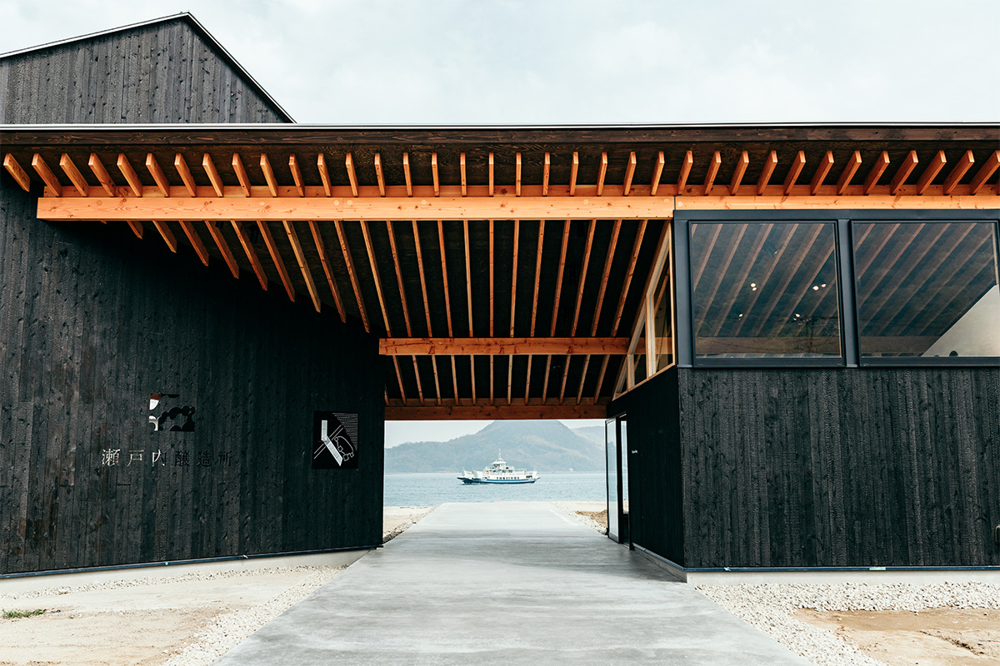
На берегу, где когда-то стояла верфь, выросла винодельня, рассказывающая о Сэтоути на языке вина. Местный виноград, кухня на соседних продуктах и сад, в котором слышно море.
Южная часть префектуры Хиросима, город Михара. Мягкий климат Внутреннего Японского моря, зелёные горы и вода, усеянная островами. На этом берегу стоит винодельня «Сэтоути дзёдзосё»: бокал здесь подают так, чтобы перед глазами открывалась красота множества островов. Внутри территории работает и ресторан «мио», где к вину готовят сэтоутинскую кухню. Сами создатели объясняют замысел девизом «вино, с которым путешествуешь по Сэтоути»: через напиток они хотят передать и пищевые традиции этой земли.
Замысел
Рассказать о Сэтоути следующим поколениям
«Хочу открыть миру пейзажи и гастрономическую культуру Сэтоути, чтобы передать японское сельское хозяйство следующему поколению», говорит глава винодельни Юя Ота, сам уроженец Михары.
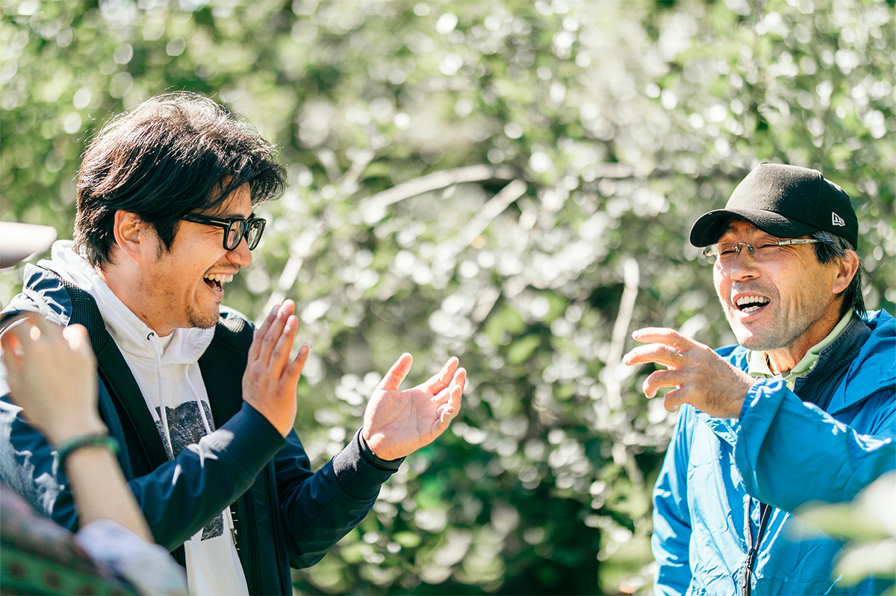
За этими словами стоит тревога, знакомая многим японским деревням. Виноградари стареют, покинуть посадки становится всё проще, и вместе с ними исчезает история целого края. Ота давно об этом думал. Его ответ построен на простой надежде: если через вино о сэтоутинской кухне узнают люди по всему свету, у виноградарей, виноделов и поваров появится работа здесь, у моря, а у традиции, продолжение.
Поэтому винодельня не скупает сырьё по самой низкой цене. Виноград для своих вин она покупает у хозяйств разных уголков Сэтоути по справедливой цене, а вкус каждой партии старается передать именно тот, что родился на этом склоне. Итоговое желание у создателей звучит так: стать рассказчиком историй родной земли и приносить ей пользу.
Архитектура
Пейзаж, который рассказывает историю
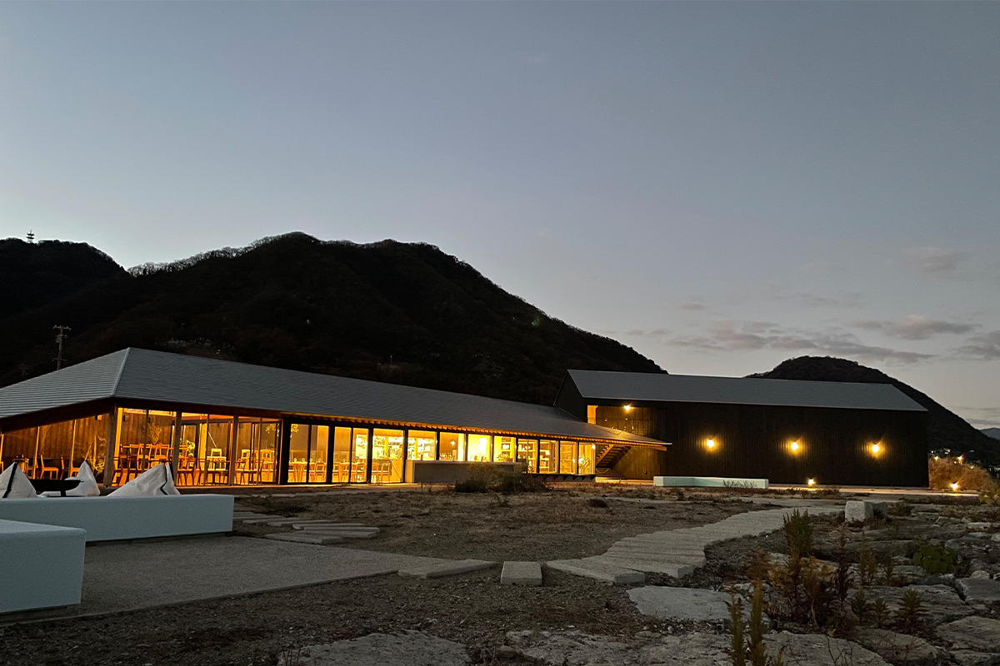
Здание спроектировал архитектор Дайсукэ Сугавара, глава токийского бюро SUGAWARADAISUKE. Его концепция называется «пейзаж, который рассказывает историю». Наружная отделка выполнена в технике обожжённого кедра: так на побережье издавна защищали дерево от соли. Большая односкатная крыша ресторанного корпуса уводит взгляд с переднего плана островов к горам на горизонте, и в этом движении читается вся география Сэтоути.
Сад перед зданием устроен по принципу «прогулки среди островов» и разбит ландшафтным дизайнером бюро TREEFORTE. Садовые плиты перекинуты между клумбами, маршрут обходит остатки кранов бывшей верфи. Сад сознательно оставлен полудиким: суровость старой верфи должна читаться, а каким он станет, решают сами годы.
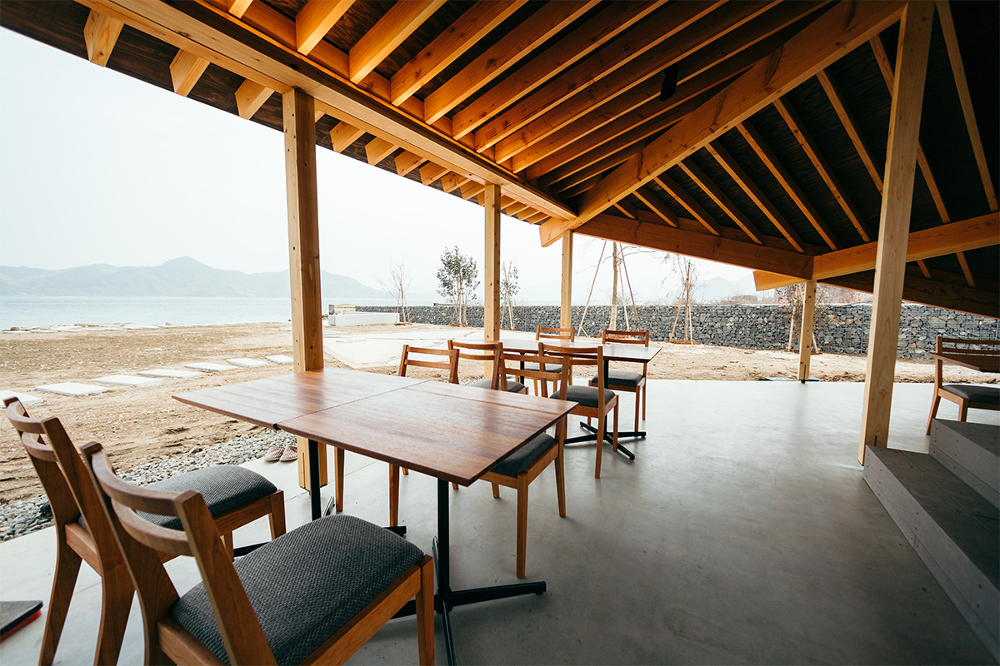
Ресторан
«мио»: след корабля на воде
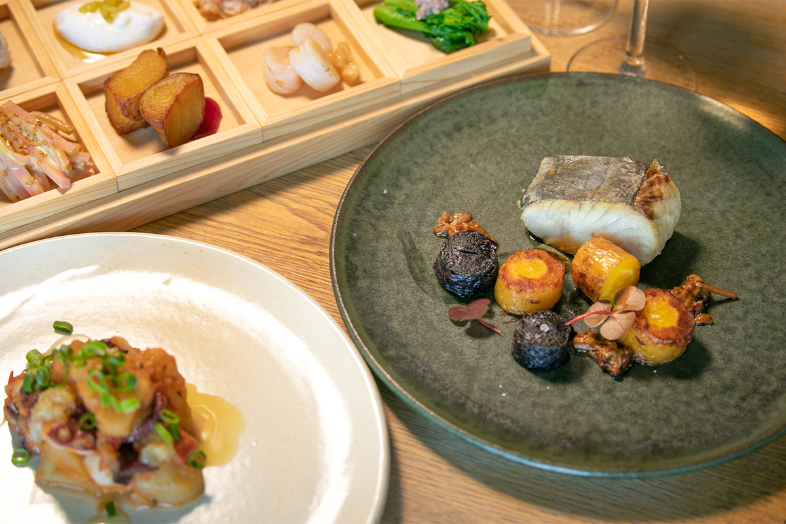
Имя «мио» означает след, который идущий корабль оставляет на воде. Кухня следует той же логике: дары моря Сэтоути и сезонные продукты соседних хозяйств, бережная готовка и вкус, рассчитанный на японское вино.
Меню здесь выверял шеф токийского ресторана «Ателье Фудзита» в Ёёги-Уэхара, а готовит его шеф-повар «мио», призёр пятого конкурса поваров в Хиросиме, прошедший стажировку во Франции. Концепция звучит как «сэтоутинские блюда к вину»: за западной основой прячутся и японские мотивы. Ставка на овощи и рыбу, лёгкие сеты вместо тяжёлых блюд. Продукты закупают у соседей, потому и плоды нестандартной формы, которым трудно найти место на рынке, здесь находят своё блюдо. Чтобы меньше продуктов пропадало зря, столик проще забронировать заранее: кухня готовится за несколько дней до обеда, хотя при наличии плана примут и без брони, детали по телефону.
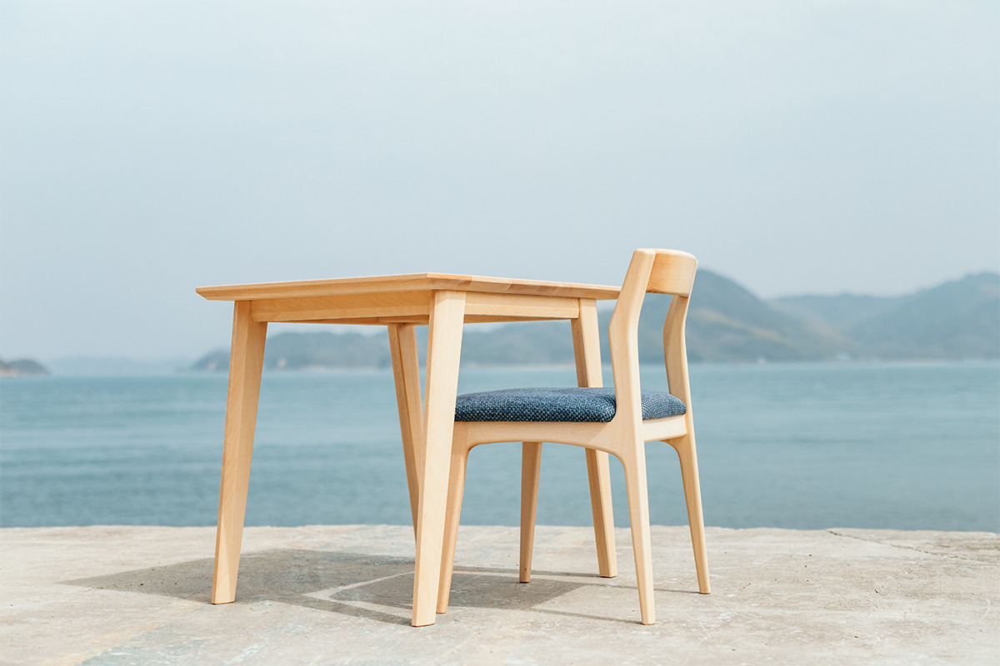
Столы, стулья и барная стойка в зале сделаны мастерами «Сакураку», семейной мастерской мебели и архитектуры из местного посёлка Куи в Михаре. Каждую вещь они собирают вручную, продумывая рисунок дерева и линию изгиба. За классической выучкой здесь современная техника: хорошую вещь хочется передать и тем, кто придёт следом.
Вина
Четыре бутылки из соседних полей
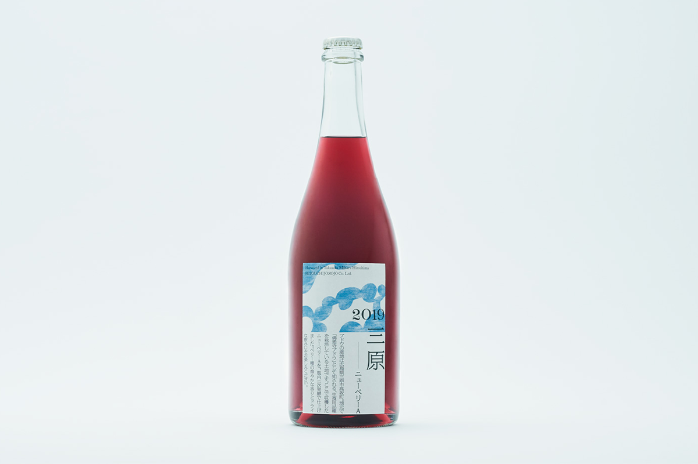
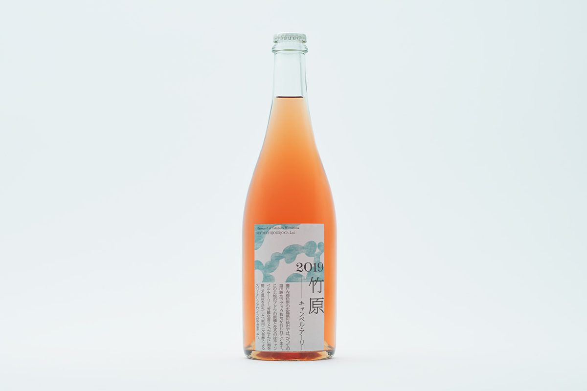
Основа виноградарства в Михаре это склоны посёлка Косака. Игристое «2019 Михара Ньюберри А» собрано из урожая 2019 года с этих полей и сделано методом вторичного брожения в бутылке. Дерево в работе не участвует: так сохраняется цветочный аромат сорта. К такой бутылке просятся деликатные блюда из рыбы, например карпаччо из михарского осьминога или савару из Сэтоути, рубленую с солью, а также салаты из свежих овощей. Цена: 3850 иен, объём 750 мл.
«2020 Такэхара Кэмпбелл Эрли» рождается на осушенных полях Такэхары на побережье Сэтоути. Прародитель местных лоз, сорт Кэмпбелл Эрли, дарит вину щедрый аромат и едва уловимую морскую ноту. Это тоже игристое с брожением в бутылке, розовое. Плотные пузырьки очищают вкус, поэтому бутылка хорошо идёт с жареным: например, с картофелем фри из посёлка Ёсива в Такэхаре. Цена: 3520 иен, объём 750 мл.
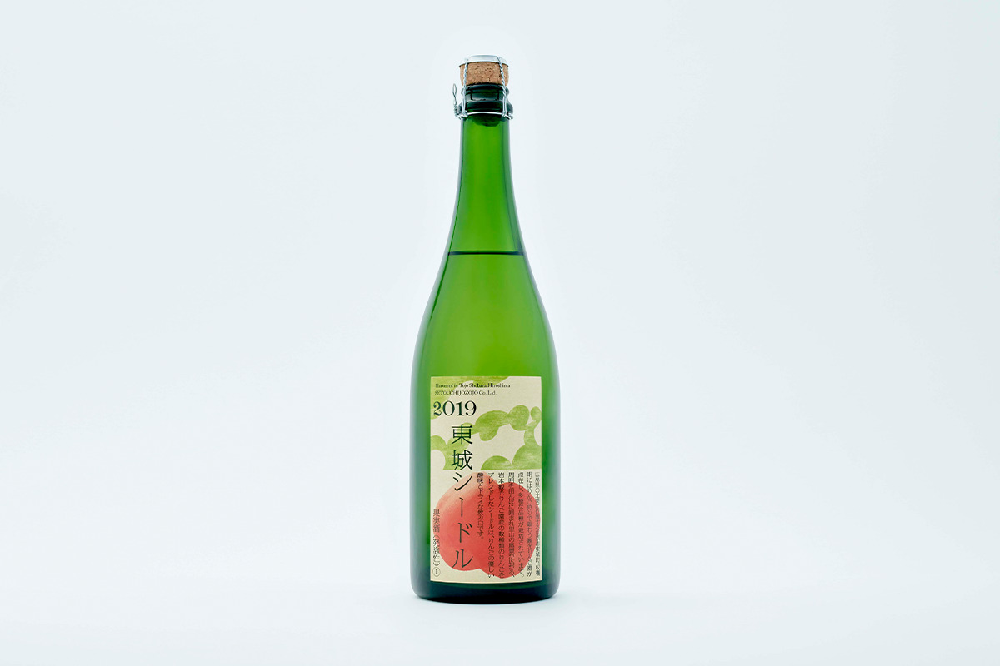
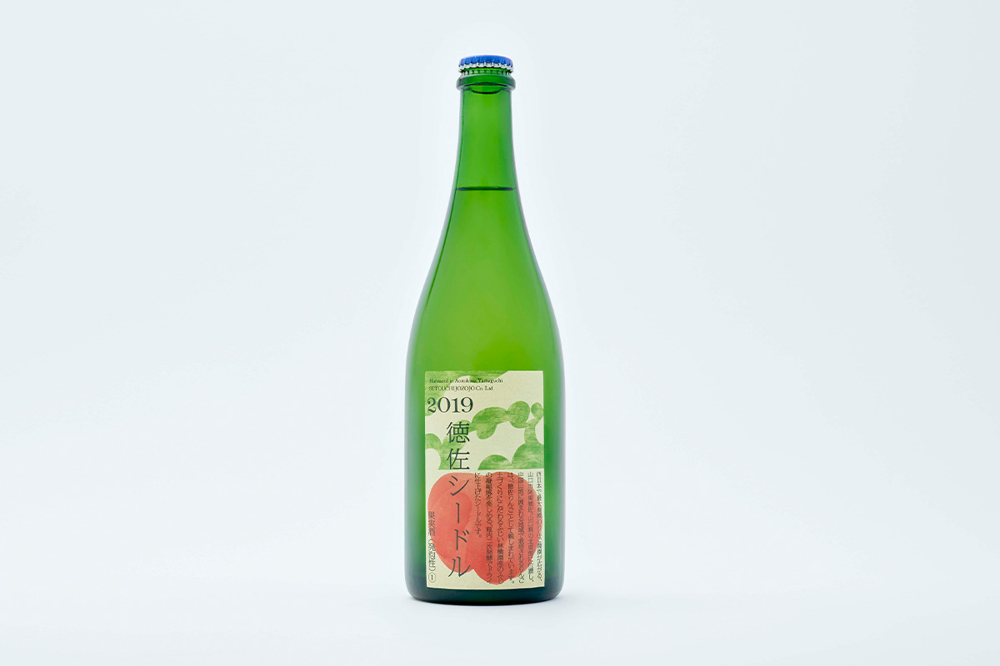
Из яблок соседних префектур здесь делают и сидры. «2019 Тодзё» собран в северо-восточной части префектуры, посёлке Тодзё в Симабаре, где осенью гости собирают яблоки сами. В бутылке смесь нескольких сортов туристических садов Ивамото: мягкая кислотность и сухое послевкусие. 3410 иен, 720 мл.
«2019 Токуса» сделан из яблок района Токуса в городе Ямагути, где раскинулось крупнейшее на западе страны яблочное хозяйство. Плоды сорта фудзи с полей садоводства «Фудзии» дают концентрированный вкус; сидр сухой, на вторичном брожении в бутылке. 3410 иен, 750 мл.
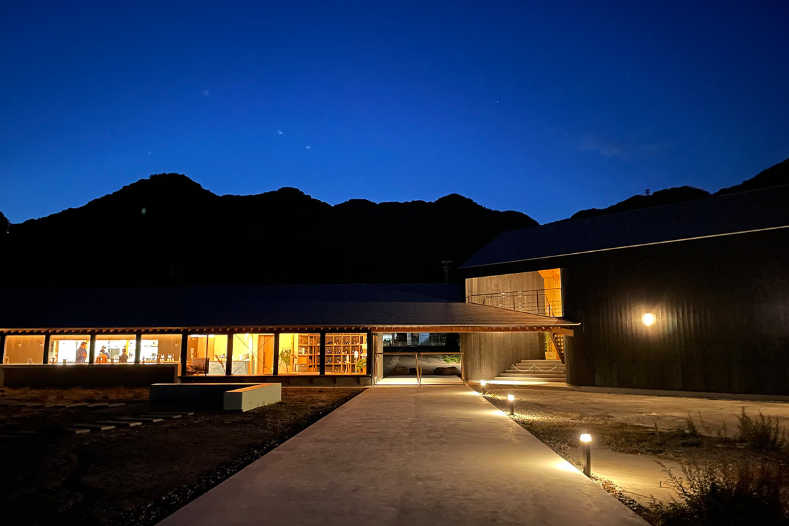
Территория рассчитана на целый день: здесь проводят экскурсии по заводу, работает кафе, летом в саду готовят на гриле, а в ресторане подают сеты из нескольких блюд. Приходите за тем редким чувством времени, которое в Сэтоути никуда не спешит.
Винодельня «Сэтоути дзёдзосё» и ресторан «мио»
- Адрес
- префектура Хиросима, город Михара, Сунами-ниси, 1-5-26
- Телефон
- +81 50-3749-9902
- Часы работы
- винный магазин 11:00–17:00; ресторан «мио»: обеды по записи, в будни 12:00–14:00
- Выходные
- вторник и третья среда месяца